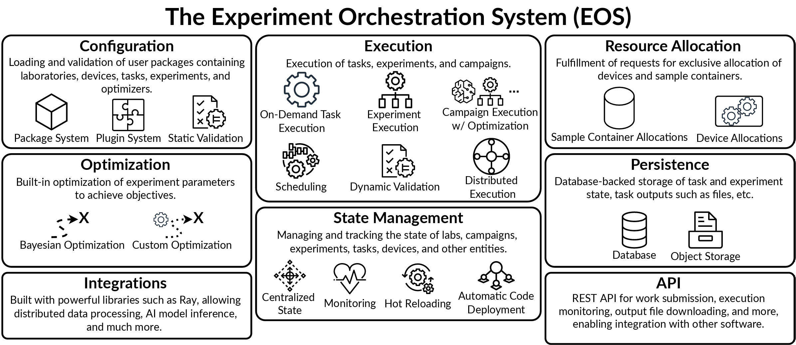

The Experiment Orchestration System (EOS)#
EOS is a software framework and runtime for laboratory automation, designed to serve as the foundation for one or more automated or self-driving labs (SDLs).
Core
Plugin system for defining labs, devices, tasks, protocols, and optimizers
Package system for sharing and reusing automation code
Validation of protocols, parameters, and configurations at load time and runtime
Execution & Scheduling
Central orchestrator that coordinates devices and protocols across multiple computers
Intelligent task scheduling with dynamic device and resource allocation
Scheduling simulation for testing strategies offline without hardware
Optimization
Built-in Bayesian optimization for protocol run campaigns, with single and multi-objective support
Hybrid AI-Bayesian optimizer that combines Bayesian optimization with LLM reasoning
Interfaces
Web UI with visual protocol editor, real-time monitoring, device inspector, and file browser
REST API with OpenAPI documentation
MCP server for connecting AI assistants
SiLA 2 instrument protocol integration
